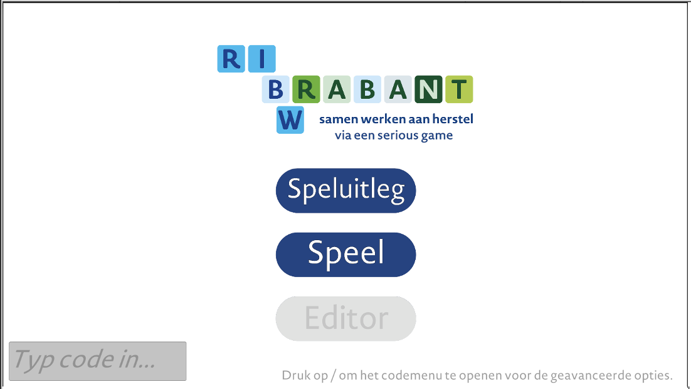
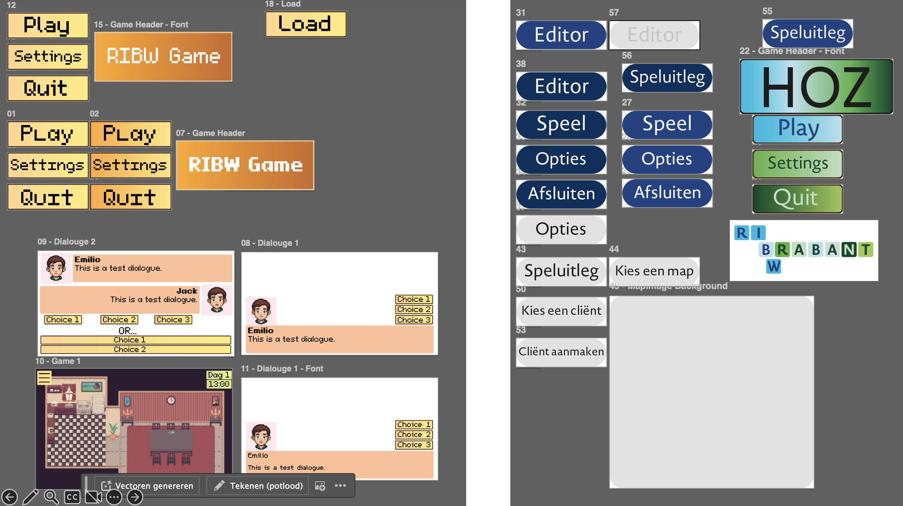
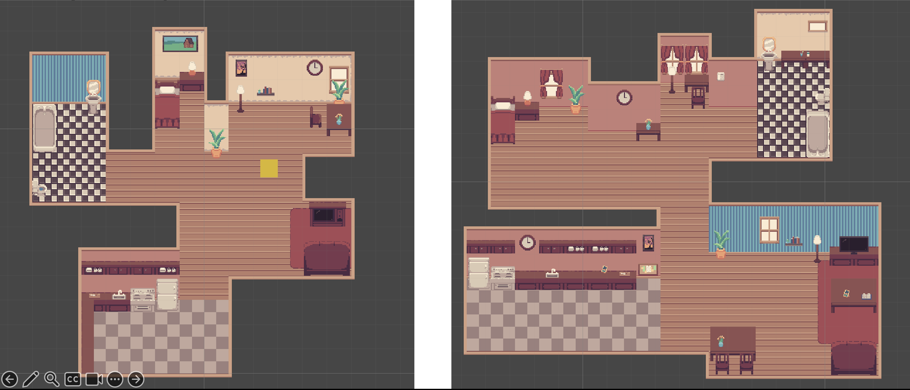

Serious Game voor RIBW Brabant
Tijdens mijn keuzemodule Serious Game Design & Development heb ik een serious game ontworpen en ontwikkeld voor RIBW Brabant, een organisatie die zich inzet voor mensen met een psychische kwetsbaarheid. Het doel van de game was om medewerkers van RIBW Brabant te helpen bij het verbeteren hoe hun herstelondersteunende zorg kan leveren aan de cliënten in de vorm van een interactief dialoogspel. Dit project was mijn eerste keer om een serious game te ontwikkelen voor een echte opdrachtgever en het was mijn eerste ervaring met het werken in een multidisciplinair team. Ik was hiervoor niet gewend om met mensen samen te werken buiten mijn studie om. Dit project heeft mijn samenwerking met mensen buiten mijn studie om verbeterd. In het begin was ik zoekende naar wat ik kon maken voor de game, maar ik vond al snel mijn plek in het designen van alle UI elementen en eigenlijk alles wat je ziet. In de afbeeldingen op deze pagina is te zien hoe de game eruit ziet en wat ik ervoor heb gedesigned.


